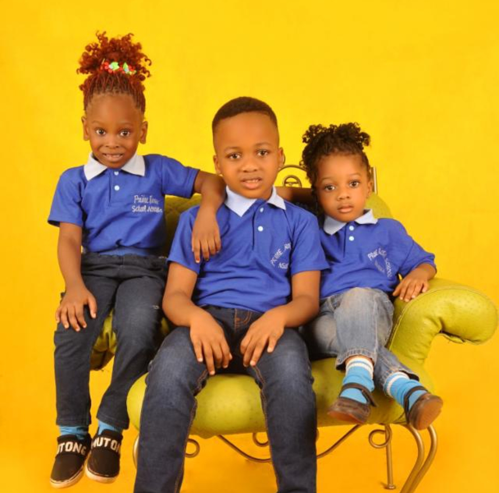

Welcome to Our Primary School
Our primary school provides a warm and supportive environment where children can grow and learn. Our experienced teachers use a variety of teaching methods to ensure that all children reach their full potential. We offer a broad range of subjects, including reading, writing, math, science, social studies, and physical education.
Our Programs
- Kindergarten
- Grades 1-5
- Special Education
In addition to our academic programs, we also offer extracurricular activities such as sports, music, and art. Our goal is to provide a well-rounded education that prepares our students for success in both their personal and professional lives.